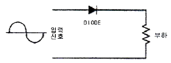
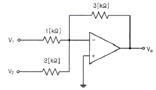
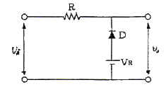
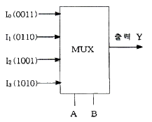
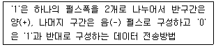
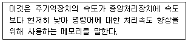
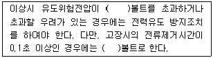

정보통신산업기사 (2013-06-09 기출문제)
1과목: 디지털전자회로
1. 다음 중 L형 평활회로와 비교한 C형 평활회로의 특성을 바르게 나타낸 것은?
- 직류 출력 전압이 낮다.
- 전압 변동율이 작다.
- 최대 역전압(PIV)이 높다.
- 시정수가 크며, 리플이 증가된다.
(정답률: 70%)

2. 다음 중 정류기의 평활회로에 사용되지 않는 것은?
- 콘덴서
- 저항
- 쵸크코일
- 다이오드
(정답률: 79%)
3. 다음 그림과 같은 회로의 기능은?

- 반파정류
- 전파정류
- 증폭
- 발진
(정답률: 80%)
4. 다음 중 낮은 주파수 대역에서 높은 주파수 대역에 걸쳐 일정한 크기의 스펙트럼을 가진 연속성 잡음으로 알맞은 것은?
- 트랜지스터 잡음
- 자연잡음
- 백색잡음
- 지터잡음
(정답률: 88%)
5. PNP와 NPN 트랜지스터를 조합하여 이루어진 push-pull 증폭회로를 무엇이라 하는가?
- 컴플리멘터리 SEPP 회로
- 위상반전회로
- OTL
- OCL
(정답률: 74%)
6. 다음 그림과 같은 연산증폭기 회로에서 V1=1[mV], V2=2[mV]일 때 출력 Vo는 얼마인가?

- -4.5[mV]
- -5.5[mV]
- -6[mV]
- -7.5[mV]
(정답률: 70%)
7. 어떤 증폭기의 전압증폭도가 1,000일 때 전압이득은 얼마인가?
- 20[dB]
- 30[dB]
- 60[dB]
- 90[dB]
(정답률: 73%)
8. 무선송신기에 수정진동자를 사용하는 이유로 가장 타당한 것은?
- 발진주파수가 안정하기 때문이다.
- 고조파를 쉽게 얻을 수 있기 때문이다.
- 일그러짐이 적은 파형을 얻기 위해서이다.
- 발진주파수를 쉽게 변경할 수 있기 때문이다.
(정답률: 74%)
9. 다음 중 발진조건으로 알맞은 것은? (단, A=증폭도, β=되먹임률)
- Aβ = 1
- Aβ ＜ 1
- Aβ ＞ 1
- Aβ ≠ 1
(정답률: 88%)
10. 다음 변조방식 중 아날로그 변조방식이 아닌 것은?
- PPM
- PAM
- PCM
- PWM
(정답률: 85%)
11. 다음 중 최고 주파수가 8[kHz]인 신호파를 펄스코드변조(PCM)할 경우 표본화 주기로 적합한 것은?
- 1.25[μs]
- 6.25[μs]
- 12.5[μs]
- 62.5[μs]
(정답률: 49%)
12. 다음 그림과 같은 회로의 명칭으로 가장 적합한 것은? (단, Vi ＞ VR)

- Clipping Circuit
- Clamping Circuit
- Limiter Circuit
- Slicer Circuit
(정답률: 65%)
13. 트랜지스터의 스위칭 동작에서 turn-off 시간은?
- 지연시간(td)
- 지연시간(td) + 상승시간(tr)
- 축적시간(ts)
- 축적시간(ts) + 하강시간(tf)
(정답률: 84%)
14. 이진수(binary number) 표현으로 "10100001"은 10진수로 얼마인가?
- 121
- 141
- 161
- 181
(정답률: 80%)
15. 다음 중 3초과 코드(excess-3 code)에 대한 설명으로 옳지 않은 것은?
- 자기보수형 코드이다.
- 언웨이티드 코드의 대표적이기도 하다.
- 8421 code에 3(10)을 더하여 만든 것이다.
- BCD 코드보다 연산이 어렵다.
(정답률: 85%)
16. 다음 중 논리계산식이 틀린 것은?
- A+1 = A
- A+A = A
- AㆍA = A
- A+AㆍB = A
(정답률: 74%)
17. n비트 직렬이벽-직렬출력 레지스터를 이용하여 시간 지연회로를 구성할 때, 4비트 레지스터를 사용하였다면 Time Delay는 얼마인가? (단, 클럭 주파수는 1[MHz]이다.)
- 1[μs]
- 2[μs]
- 3[μs]
- 4[μs]
(정답률: 50%)
18. 다음 중 레지스터의 주 기능에 해당하는 것은?
- 스위칭 기능
- 데이터의 일시 저장
- 펄스 발생기
- 회로 동기장치
(정답률: 84%)
19. 다음과 같은 멀티플렉서 회로에서 제어입력 A와 B가 각각 1일 때 출력 Y의 값은?

- 0011
- 0110
- 1001
- 1010
(정답률: 76%)
20. 디지털 IC의 정상 동작에 영향을 주지 않고 게이트 출력부에 연결할 수 있는 표준 부하의 숫자를 무엇이라고 하는가?
- 팬 아웃
- 틸트
- 잡음 허용치
- 전달지연 시간
(정답률: 82%)
2과목: 정보통신기기
21. 다음 정보 단말기의 기능 중 성격이 다른 것은?
- 입ㆍ출력 기능
- 에러 제어 기능
- 입ㆍ출력 제어 기능
- 송ㆍ수신 제어 기능
(정답률: 79%)
22. 정보 단말기 중 회선 제어부의 기능이 아닌 것은?
- 병렬 Data를 직렬로 변환 기능
- 2진 비트열로 변환 기능
- 직렬 Data를 병렬로 변환 기능
- 전송제어문자나 부호의 식별 기능
(정답률: 83%)
23. 다음 중 통신제어장치(CCU : Communication Control Unit)의 형태에 따른 분류가 아닌 것은?
- 전처리장치(FEP)
- 중앙처리장치(CPU)
- 원격처리장치(RP)
- 통신제어처리장치(CCP)
(정답률: 88%)
24. ITU-T의 표준 시리즈 중 V 시리즈는 무엇에 관한 규정인가?
- 종합 정보 통신망을 이용한 데이터 전송
- 축적 데이터 교환망을 이용한 데이터 전송
- 전화망을 이용한 데이터 전송
- 공중 데이터 통신망을 이용한 데이터 전송
(정답률: 86%)
25. 채널 간의 상호 간섭을 막기 위해 보호 대역이 필요한 다중화는?
- 주파수 분할 다중화
- 진폭 분할 다중화
- 시분할 다중화
- 코드 분할 다중화
(정답률: 66%)
26. 다음 중 광가입자망의 가입자별로 하나의 파장을 대응시켜 고속전송이 가능한 방식은?
- FDM 방식
- TDM 방식
- SDM 방식
- WDM 방식
(정답률: 81%)
27. 네트워크 장비인 라우터에 대한 설명으로 옳지 않은 것은?
- 네트워크 계층에서 동작한다.
- 서로 다른 네트워크 간의 연결을 위해 사용된다.
- 하나의 네트워크 세그먼트 안에서 크기를 확장한다.
- 서로 다른 VLAN 간의 통신을 가능하게 해준다.
(정답률: 82%)
28. 디지털 가입자 회선기술로서 망측과 가입자측에 각각 설치되어 가입자 선로상으로 효율적인 데이터 전송을 위한 것이 아닌 것은?
- HDSL
- ADSL
- VDSL
- DSSL
(정답률: 83%)
29. 입력회선의 수가 출력회선의 수와 같거나 많으며, 동적 할당을 통해서 실제 전송할 데이터가 있는 단말 장치에게만 시간폭을 할당하는 장비는?
- 집중화기
- 다중화기
- 모뎀 공유 장치
- 라우터
(정답률: 67%)
30. 영상통신기기 중 카메라에 사용되는 센서로 노출된 이미지를 전기적인 형태로 바꾸어 전송 또는 저장하는 역할을 담당하는 것은?
- SSD
- CCD
- MHS
- ROM
(정답률: 83%)
31. 다음 중 전화기의 기본 구성이 아닌 것은?
- 통화 회로
- 신호 회로
- 가입자 교환회로
- 측음 방지회로
(정답률: 81%)
32. 전화 전송에 있어서 송화단의 전압과 수화단의 전압의 비가 100:1일 때 전송량은 얼마인가?
- 10[dB]
- 20[dB]
- 30[dB]
- 40[dB]
(정답률: 73%)
33. 다음 중 CATV 방송의 기본 구성요소가 아닌 것은?
- 헤드엔드
- 가입자 단말장치
- 중계 전송망
- 사설교환기(PBX)
(정답률: 71%)
34. 이동통신용 단말기의 사용 파장이 0.1[m]라면 주파수는 얼마인가?
- 3[MHz]
- 3[GHz]
- 30[GHz]
- 300[GHz]
(정답률: 85%)
35. 이동통신방식에 사용되는 CDMA 시스템의 특징이 아닌 것은?
- 페이딩에 강함
- 전력제어로 용량 증대
- 통신보안 우수
- 사용자간의 채널 할당이 필요
(정답률: 73%)
36. 100[mW]의 신호 전력을 [dBm]으로 환산하면 얼마인가?
- 10[dBm]
- 20[dBm]
- 30[dBm]
- 40[dBm]
(정답률: 68%)
37. 다음 중 위성통신 방식이 아닌 것은?
- 정지궤도 위성 방식
- 랜덤 위성 방식
- 위상 위성 방식
- 검파 중계 위성 방식
(정답률: 75%)
38. 다음 중 UWB 기술에 대한 설명으로 거리가 가장 먼 것은?
- 무선반송파를 사용하지 않는다.
- 기저대역에서 수 GHz 이하의 좁은 주파수 대역을 사용한다.
- 통신이나 레이더 등에 주로 응용된다.
- 협대역 통신신호에 의한 간섭 특성이 우수하다.
(정답률: 69%)
39. 음성신호를 패킷 데이터로 변환하여 인터넷 망에서 전화 서비스를 제공하는 것은?
- WiBro
- Telematics
- WCDMA
- VoIP
(정답률: 84%)
40. 다음 뉴미디어 기기 중 문자 혹은 도형 형태의 정보를 수신자가 원할 때 제공하며 수신자는 별도의 수신장치 없이 정보를 이용할 수 있는 것은?
- 비디오텍스(Videotex)
- 팩시밀리(Facsimile)
- 텔레텍스트(Teletext)
- 텔레텍스(Teletex)
(정답률: 74%)
3과목: 정보전송개론
41. 다음 설명에 해당하는 것은 무엇인가?

- 바이폴라 펄스
- 맨체스터 펄스
- 차동 펄스
- 단주(단류) RZ 펄스
(정답률: 80%)
42. 주파수대역폭이 fd[Hz]이고 통신로의 채널용량이 6fd[bps]인 통신로에서 필요한 S/N비는?
- 15
- 31
- 63
- 127
(정답률: 85%)
43. 다음 중 PCM-24/TDM 시스템에 대한 설명으로 잘못된 것은?
- 1프레임의 비트수는 193개이다.
- 표본화 주파수로는 8[kHz]를 사용한다.
- 한 채널의 정보 전송량은 64[kbps]이다.
- 펄스전송속도는 2.048[Mbps]이다.
(정답률: 73%)
44. 데이터 전송속도를 높이기 위해서 진폭변조와 위상변조를 결합한 방식은?
- QAM
- QPSK
- FSK
- MSK
(정답률: 88%)
45. 동축케이블과 광케이블의 혼합망으로 방송국에서 원거리까지 광케이블을 이용하여 전송하고, 광단국에서 가입자까지는 동축케이블을 이용한 망은?
- FTTH
- FTTO
- HCO
- HFC
(정답률: 73%)
46. 다음 동축케이블 측정rqkt 중 특성 임피던스가 가장 적은 것은? (단, D[mm]: 외부도체의 직경, d[mm]: 내부도체의 직경)
- D=2, d=1
- D=8, d=3
- D=3, d=1
- D=8, d=2
(정답률: 83%)
47. 다음 중 동축케이블에서 외부로부터 유도 방해를 받지 않기 위해 접지하는 부분은 무엇인가?
- 외부도체
- 절연체
- 내부도체
- 피복
(정답률: 81%)
48. 동축케이블을 이용한 케이블 TV망에서 케이블TV 회선과 인터넷 사용을 위한 사용자 PC를 연결해 주는 장치는?
- 광중계기
- 케이블 모뎀
- 헤드엔드
- 트랜시버
(정답률: 89%)
49. 혼합형 동기식 전송 방식(Isochronous Transmission)의 특징이 아닌 것은?
- 일반적으로 비동기식 전송보다 전송속도가 빠르다.
- 동기식 전송과 비동기 전송의 특성을 혼합한 방식이다.
- 문자와 문자 사이에 휴지시간이 없다.
- Start bit와 Stop bit를 가진다.
(정답률: 82%)
50. 디지털 통신시스템의 수신기에서 수신되는 비트열(Bit Stream)의 클럭 또는 비트 파형의 전이(Transition)를 정확히 재생하는 동기 방식은?
- 비트 동기
- 문자 동기
- 플래그 동기
- 프레임 동기
(정답률: 86%)
51. 전화교환기에서 신호 정보를 집중 처리하는 특성에 의해 적용되는 방식으로 신호 회선과 통화 회선이 분리되어 있는 신호 방식은?
- 집중 신호 방식
- 통화로 신호 방식
- 개별선 신호 방식
- 공통선 신호 방식
(정답률: 74%)
52. 기저대역(Baseband) 전송방식이 아닌 것은?
- RZ 전송방식
- NRZ 전송방식
- 캐리어 전송방식
- 바이폴라 전송방식
(정답률: 77%)
53. OSI 참조모델에서 구문(syntax)의 협상 및 재협상, 문맥(context) 제어 기능, 암호화 및 데이터 압축기능 등을 수행하는 계층은?
- 네트워크계층
- 전송계층
- 세션계층
- 표현계층
(정답률: 81%)
54. 프로토콜의 기본 요소 중 전송의 조정이나 오류 제어를 위한 제어 정보에 대한 규정을 하는 것은?
- 구문(Syntax)
- 의미(Semantics)
- 타이밍(Timing)
- 동기(Synchronization)
(정답률: 71%)
55. 다음 중 OSI 7계층의 하위 계층에 해당하는 것은?
- 물리계층, 데이터링크계층, 네트워크계층
- 세션계층, 표현계층, 네트워크계층
- 물리계층, 트랜스포트계층, 표현계층
- 데이터링크계층, 트랜스포트계층, 세션계층
(정답률: 88%)
56. 네트워크 연결 장치에 속하는 브리지(Bridge)는 주소표의 정보와 프레임의 무엇을 비교하여 프레임을 전달하는가?
- 2계층의 발신자 주소
- 발신노드의 물리 주소
- 2계층의 목적지 주소
- 3계층의 목적지 주소
(정답률: 74%)
57. IP address 체계의 B class에서 하나의 네트워크에서 수용할 수 있는 최대 호스트 수는 몇 개인가?
- 128개
- 254개
- 65,534개
- 16,277,214개
(정답률: 82%)
58. 다음 중 네트워크 토폴로지(topology, 망구성방식)에서 해당하지 않는 것은?
- Star형
- Mesh형
- Bus형
- Node형
(정답률: 82%)
59. 다음 중 HDLC의 제어 명령어에 대한 설명으로 옳지 않은 것은?
- RR : 수신 준비가 되어 있다는 것을 알림
- UA : 비번호제 명령에 대한 응답
- SNRM : 정규 응답 모드로의 데이터링크 설정을 요청
- SARM : 비동기 평형 모드로의 연결설정 요구
(정답률: 68%)
60. 다음 중 자기 정정을 할 수 없는 코드는 무엇인가?
- 허프만 코드
- 컨벌루션 코드
- 해밍 코드
- BCH 코드
(정답률: 68%)
4과목: 전자계산기일반 및 정보설비기준
61. 다음 중 비교적 속도가 빠른 I/O 장치를 통해, 특정한 하나의 장치를 독점하여 입ㆍ출력으로 사용하는 채널은?
- Simple Channel
- Select Channel
- Byte Multiplexer Channel
- Block Multiplexer Channel
(정답률: 72%)
62. 다음 중 고정 소수점에 대한 설명으로 틀린 것은?
- 컴퓨터 내부에서 주로 정수를 표현할 때 사용되는 데이터 형식이다.
- 레지스터의 첫 번째 비트는 부호비트이고, 나머지는 정수부이다.
- 2바이트 정수형과 4바이트 정수형이 있다.
- 부호 비트는 정수부가 음수이면 "0", 양수이면 "1"로 표현한다.
(정답률: 73%)
63. 주 기억장치에 저장된 명령어를 하나하나씩 인출하여 연산코드 부분을 해석한 다음 해석한 결과에 따라 적합한 신호로 변환하여 각각의 연산장치와 메모리에 지시 신호를 내는 것은?
- 연산 논리 기구(ALU)
- 입출력장치(I/O unit)
- 채널(Channel)
- 제어장치(control unit)
(정답률: 72%)
64. 다음 문장이 설명하는 것으로 알맞은 것은?

- Virtual Memory
- Cache Memory
- Associative Memory
- Random Access Memory
(정답률: 77%)
65. 10진수 10에 대해 2진법, 8진법 및 16진법의 표현으로 옳은 것은?
- 1001, 10, 10
- 1001, 11, A
- 1010, 12, A
- 1010, 12, B
(정답률: 80%)
66. 논리적으로 상호 연관된 레코드나 파일들의 집합이며 다수의 응용 시스템들의 사용되기 위하여 통합, 저장된 운영 데이터의 집합을 무엇이라 하는가?
- 레코드
- 파일
- 필드
- 데이터베이스
(정답률: 77%)
67. 컴퓨터 시스템의 운영을 제어하고 지원하는 프로그램에 속하지 않는 것은?
- 컴파일러
- 운영체제
- 로더
- 데이터베이스
(정답률: 71%)
68. 반도체 기억소자로서 리프레시(refresh)가 필요한 기억장치는?
- SRAM
- DRAM
- Mask ROM
- EPROM
(정답률: 73%)
69. 다음 중 2진수 1011에 대한 2의 보수(2's complement)는?
- 1010
- 0100
- 0101
- 0111
(정답률: 74%)
70. 다음 중 운영체제에 대한 설명으로 틀린 것은?
- 컴퓨터 시스템을 효율적으로 관리
- 컴퓨터를 사용자가 편리하게 이용 가능
- 업무를 처리하기 위해 사용자가 개발한 소프트웨어
- 사용자와 하드웨어 사이의 interface
(정답률: 74%)
71. 다음은 전력유도 방지에 관한 규정이다. 괄호 안에 들어갈 수치로 맞게 나열된 것은?

- 650, 600
- 550, 430
- 650, 430
- 550, 300
(정답률: 77%)
72. 국선단자함에서 동단자함 또는 동단자함에서 동단자함까지(건물간 구간) 연결하는 통신케이블을 무엇이라 하는가?
- 구내간선케이블
- 구내배선케이블
- 수평간선케이블
- 수평배선케이블
(정답률: 77%)
73. 다음 중 미래창조과학부장관이 전기통신기본계획을 수립하고자 할 때 미리 관계 행정기관의 장과 협의하여야 하는 사항으로 알맞은 것은?
- 전기통신의 이용효율화에 관한 사항
- 전기통신의 질서유지에 관한 사항
- 전기통신사업에 관한 사항
- 전기통신설비에 관한 사항
(정답률: 68%)
74. 다음 중 방송통신설비의 기술기준에 관한 규정에서 정의하는 “전원설비”의 정의와 관련 없는 것은?
- 정류기
- 축전기
- 수변전장치
- 단말장치
(정답률: 70%)
75. 다음 중 전기통신기본법에서 정의하는 전기통신사업자로 볼 수 없는 것은?
- 특정통신사업자
- 기간통신사업자
- 별정통신사업자
- 부가통신사업자
(정답률: 65%)
76. 일반적으로 부가통신사업을 경영하고자 할 때 취해야 할 행정절차는?(관련 규정 개정전 문제로 여기서는 기존 정답인 1번을 누르면 정답 처리됩니다. 자세한 내용은 해설을 참고하세요.)
- 미래창조과학부장관에게 신고하여야 한다.
- 미래창조과학부장관에서 등록하여야 한다.
- 미래창조과학부장관의 승인을 받아야 한다.
- 미래창조과학부장관의 허가를 얻어야 한다.
(정답률: 82%)
77. 다음 중 선로의 도달이 어려운 지역을 해소하기 위해 사용하는 증폭장치는?
- 전송장치
- 발진장치
- 제어장치
- 중계장치
(정답률: 83%)
78. 비상사태가 발생한 경우 방송통신설비의 안정성 및 신뢰성을 확보하기 위한 대응대책으로 바람직하지 않는 것은?
- 임시 통신설비를 배치한다.
- 임시 통신회선을 설정한다.
- 저장된 데이터를 즉시 파괴한다.
- 광역응급구호 체제를 명확히 한다.
(정답률: 87%)
79. 다음 중 감리원의 업무범위에 속하지 않는 것은?
- 공사일보 작성 및 진도보고
- 공사 진척 부분에 대한 조사 및 검사
- 공사업자가 작성한 시공 상세도면의 검토확인
- 설계변경에 관한 사항의 검토확인
(정답률: 74%)
80. 용역업자가 정보통신공사의 감리결과를 발주자에게 통보하여야 하는 기간은 공사가 완료된 날로부터 며칠 이내여야 하는가?
- 5일
- 7일
- 10일
- 14일
(정답률: 85%)
C형 평활회로는 L형 평활회로와 달리 콘덴서를 사용하여 전압을 평활화하는 회로이다. 이 때문에 직류 출력 전압이 낮아지고, 전압 변동율이 작아진다. 하지만 콘덴서는 역전압을 받으면 파괴될 수 있기 때문에 최대 역전압(PIV)이 높은 다이오드를 사용해야 한다. 따라서 C형 평활회로는 최대 역전압(PIV)이 높다는 특징을 가진다. 하지만 시정수가 크며, 리플이 증가된다는 단점도 있다.